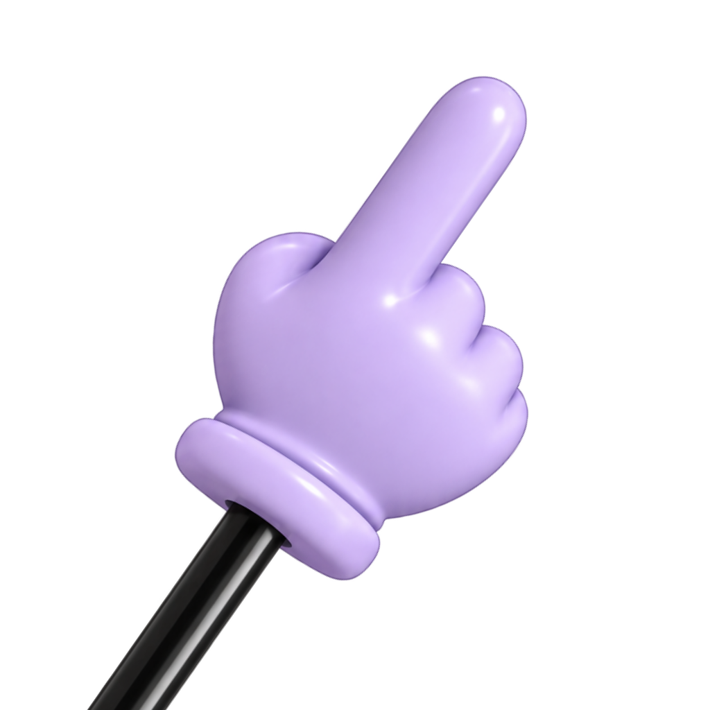

Point with personality.
Choose from the hand collection or use a laser. Put the pointer on the detail you want people to notice.
Pointers and screen annotations for Mac.
Put a hand where you want people to look. Draw an arrow, highlight a detail, or add a note as you explain.

Go with the lavender toy, a classic glove, a robot or something softer. Use a laser when a hand would be too much.


Choose from the hand collection or use a laser. Put the pointer on the detail you want people to notice.
Draw, highlight, place arrows and shapes, or add text and number markers. Undo and clear as you go.
Use the menu bar, quick controls at your cursor, or Stream Deck. The floating toolbar is optional.
Turn Interact on for normal clicks and drags, then turn it off to annotate again.
The expanded app is being tested on Austin's Mac. There is no public Look Here Please build yet. The default GitHub main branch still contains the earlier functional source.
This page describes the local review direction. Testing, builds and packaging run locally; hosted CI stays disabled.